library(edgeR)
library(ggplot2)
library(GGally)
library(EDASeq)
library(utils)
beeCounts <-read.delim(file="AllLaneCount.txt",row.names=1,stringsAsFactors = FALSE)
colnames(beeCounts) <- c("NC.1", "NC.2", "NR.1", "VR.1", "NS.1", "VP.1", "NS.2", "VR.2", "NP.1", "VP.2", "VC.1", "NP.2", "VP.3", "NP.3", "VS.1", "VS.2", "VC.2", "NC.3", "VP.4", "NC.4", "NR.2", "VC.3", "VC.4", "NP.4", "VR.3", "NC.5", "VS.3", "NP.5", "VC.5", "VS.4", "NS.3", "VS.5", "VP.5", "NR.3", "NR.4", "VC.6", "NS.4", "NC.6", "NP.6", "VR.4", "NR.5", "NR.6", "NS.5", "VP.6", "NS.6", "VR.5", "VR.6", "VS.6")
beeCounts <- beeCounts[ , order(names(beeCounts))]
laneInfo <- c("L12","L12","L12","L12","L34","L34","L12","L12","L12","L12","L34","L34","L12","L12","L34","L34","L34","L34","L12","L12","L34","L34","L34","L34","L12","L12","L12","L12","L34","L34","L12","L12","L12","L12","L34","L34","L12","L12","L34","L34","L34","L34","L12","L12","L34","L34","L34","L34")
y <- DGEList(counts=beeCounts)libSizeB4 <- y[[2]]
libSizeB4$group <- unlist(lapply(rownames(libSizeB4), function(x) unlist(strsplit(x,"\\."))[1]))
libSizeB4$laneInfo <- laneInfo
ggplot(libSizeB4, aes(x=rownames(libSizeB4), y=lib.size, fill=laneInfo, las=3)) + geom_bar(position=position_dodge(), stat="identity", colour="black", size=.3) + theme(axis.text.x = element_text(angle = 90, hjust = 1)) + labs(x = "Sample", y = "Library size")# Use thin black outlines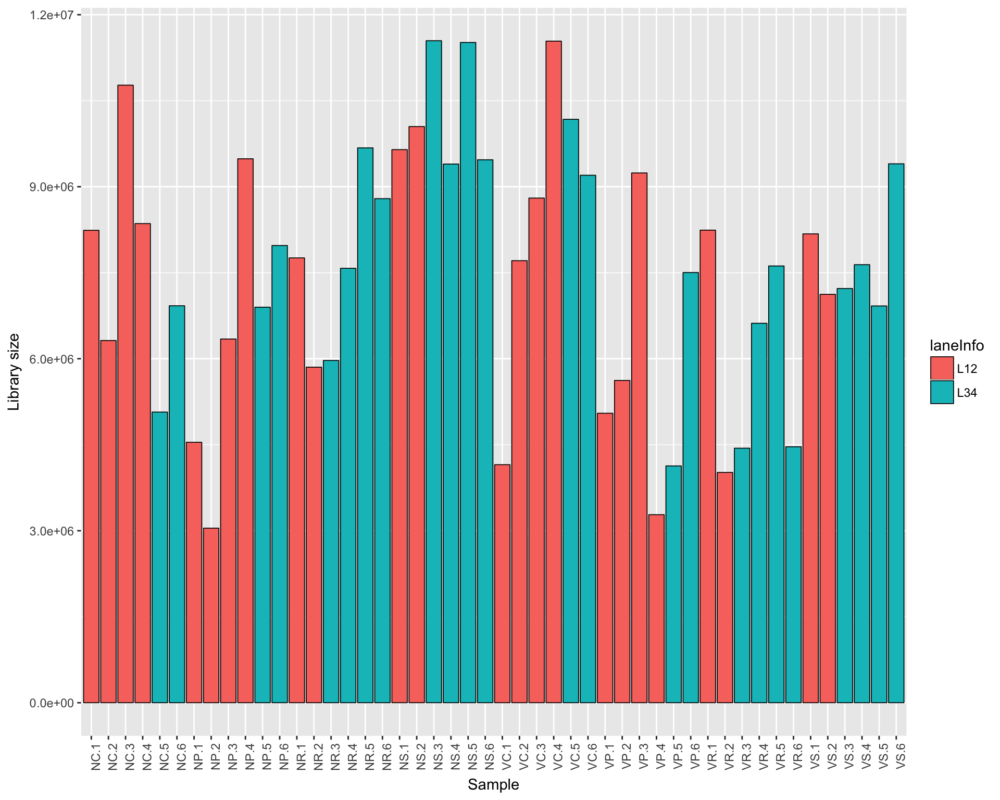
ggplot(libSizeB4, aes(x=rownames(libSizeB4), y=lib.size, fill=group, las=3)) + geom_bar(position=position_dodge(), stat="identity", colour="black", size=.3) + theme(axis.text.x = element_text(angle = 90, hjust = 1)) + labs(x = "Sample", y = "Library size")# Use thin black outlines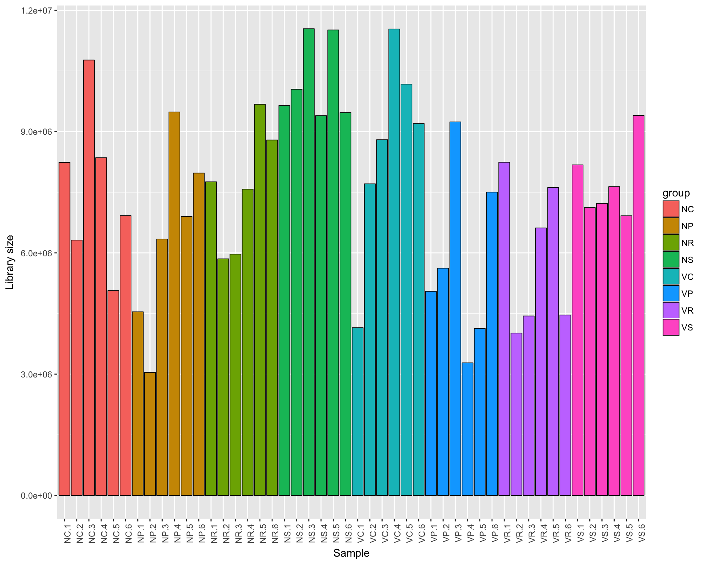
libSizeB4 <- libSizeB4[with(libSizeB4, order(lib.size)), ]
ggplot(libSizeB4, aes(x=as.factor(lib.size), y=lib.size, fill=laneInfo)) + geom_bar(position=position_dodge(), stat="identity", colour="black", size=.3) + theme(axis.text.x = element_text(angle = 90, hjust = 1)) + labs(x = "Sample", y = "Library size") + scale_x_discrete(labels=row.names(libSizeB4))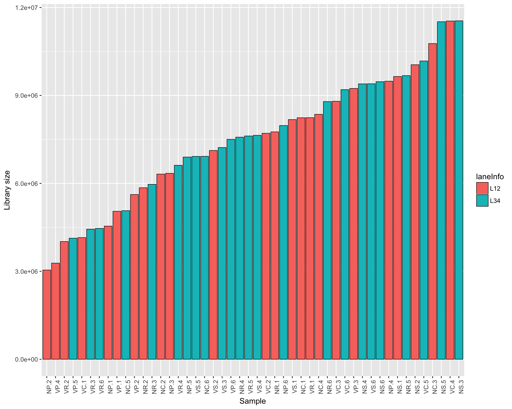
ggplot(libSizeB4, aes(x=as.factor(lib.size), y=lib.size, fill=group)) + geom_bar(position=position_dodge(), stat="identity", colour="black", size=.3) + theme(axis.text.x = element_text(angle = 90, hjust = 1)) + labs(x = "Sample", y = "Library size") + scale_x_discrete(labels=row.names(libSizeB4))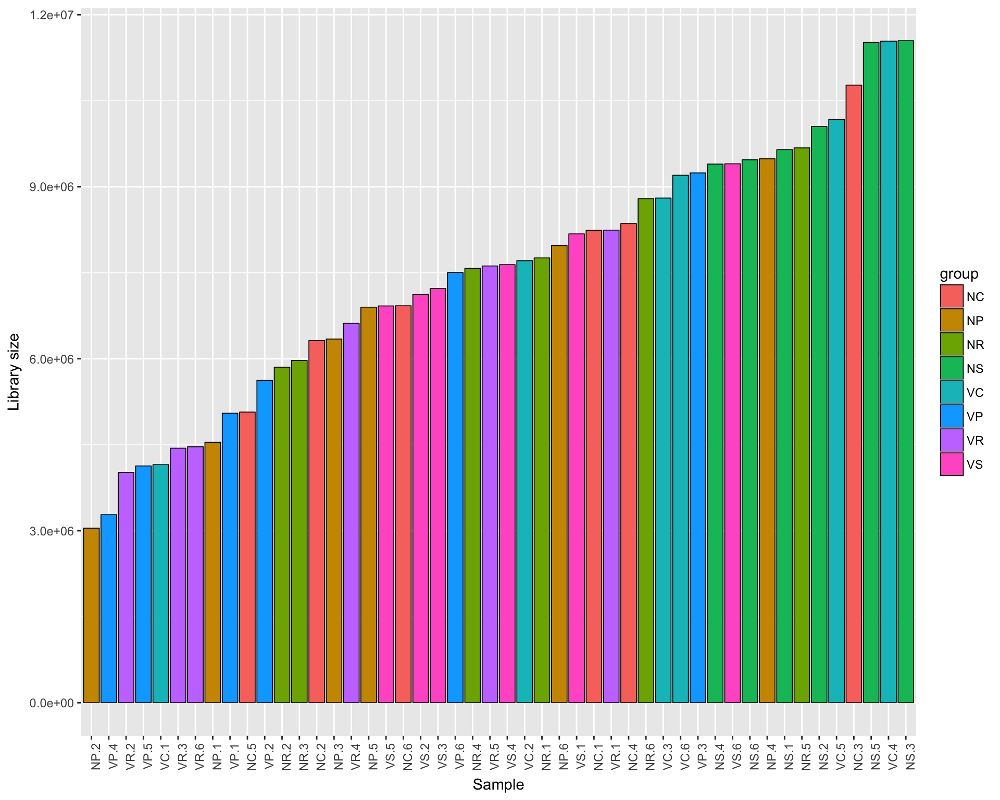
libSizeB4 <- libSizeB4 %>% group_by(group) %>% summarise(mean = mean(lib.size), sd = sd(lib.size))
ggplot(libSizeB4, aes(x=group, y=mean, fill=group)) + geom_bar(position=position_dodge(), stat="identity", colour="black", size=.3) + geom_errorbar(aes(ymin=mean-sd, ymax=mean+sd), size=.3, width=.2, position=position_dodge(.9))################## Strict edgeR Filtering ##################
# Smallest library has 3,044,259 reads
minLib <- min(y$samples$lib.size)
# CPM of 3 corresponds to a count of ~9 in the minimum number of samples in a group (24). Usually a gene is required to have a count of 5-10 in a library to be considered expressed in that library.
keep <- rowSums(cpm(y)>3) >= 24
# Number of genes 15,314--> 8,581
y <- y[keep, , keep.lib.sizes=FALSE]################## Remake Count Plots ###################
libSize <- y[[2]]
libSize$group <- unlist(lapply(rownames(libSize), function(x) unlist(strsplit(x,"\\."))[1]))
ggplot(libSize, aes(x=rownames(libSize), y=lib.size, fill=group)) + geom_bar(position=position_dodge(), stat="identity", colour="black", size=.3) # Use thin black outlines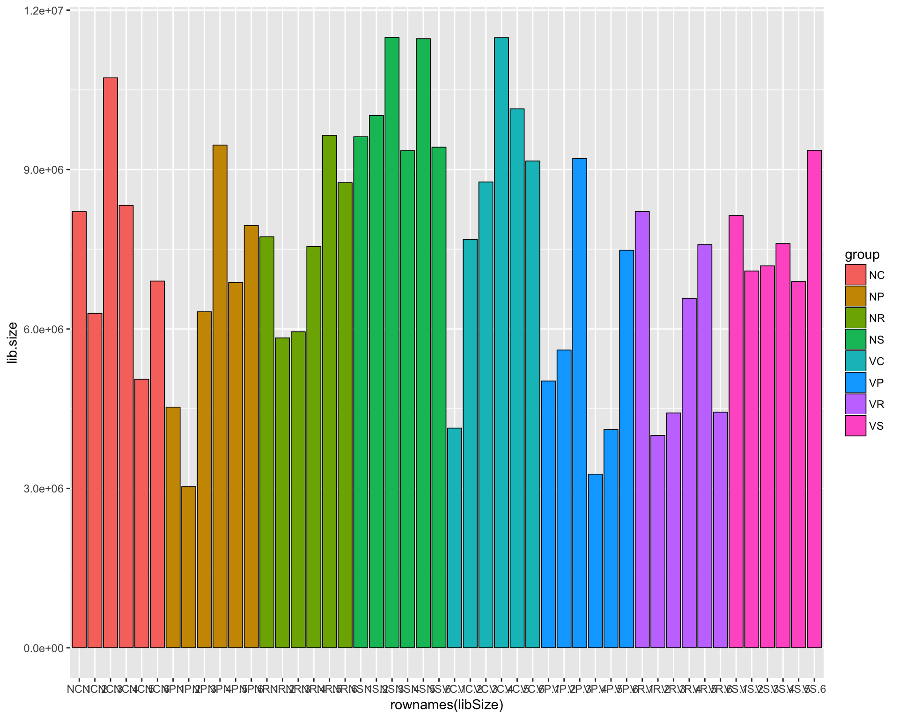
libSize <- libSize %>% group_by(group) %>% summarise(mean = mean(lib.size), sd = sd(lib.size))
ggplot(libSize, aes(x=group, y=mean, fill=group)) + geom_bar(position=position_dodge(), stat="identity", colour="black", size=.3) + geom_errorbar(aes(ymin=mean-sd, ymax=mean+sd), size=.3, width=.2, position=position_dodge(.9))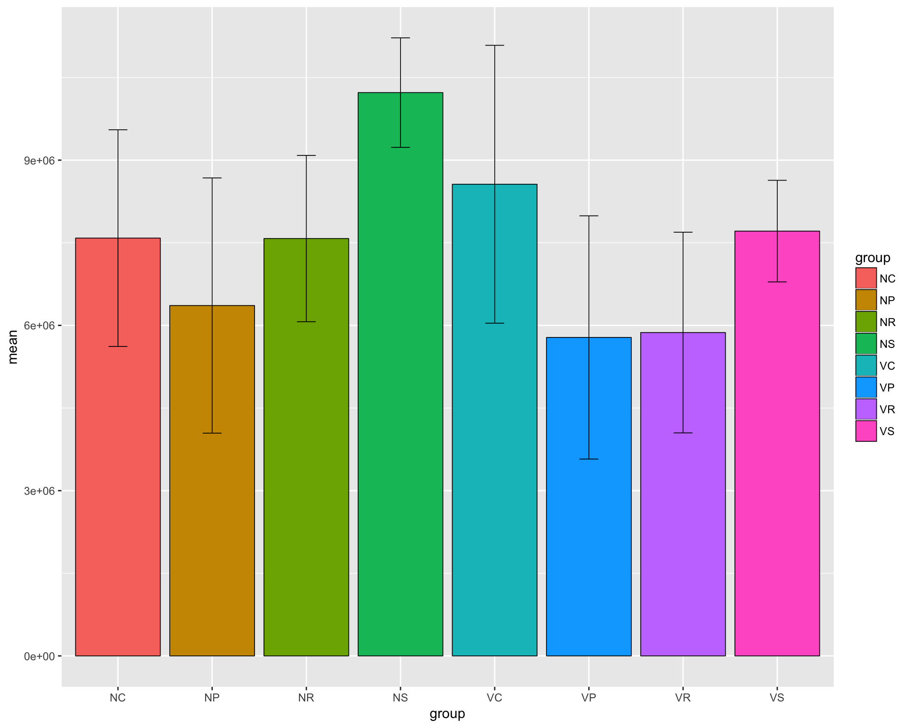
# Comparison of library sizes before and after filtering
#> summary(libSizeB4)
#Min. : 3044259
#1st Qu.: 5940314
#Median : 7628966
#3rd Qu.: 9278824
#Max. :11546515
#> summary(libSize)
#Min. : 3031956
#1st Qu.: 5917676
#Median : 7596028
#3rd Qu.: 9244567
#Max. :11487730################ edgeR Normalization ################
yERN <- calcNormFactors(y)
libSize <- yERN[[2]]################ edgeR Normalization Visuals ##############
# Cannot see much in this boxplot. Many large outliers.
ggparcoord(data.frame(yERN[[1]]), columns=1:48, alphaLines=0, boxplot=TRUE, scale="globalminmax") + coord_flip()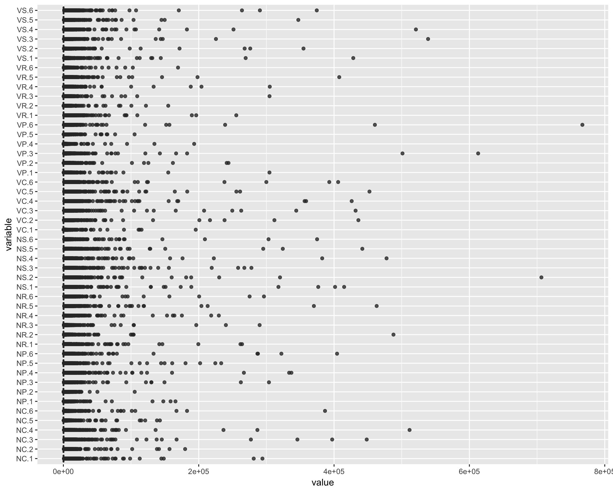
allGroups <- c(rep("NC",6), rep("NN",6), rep("NP",6), rep("NR",6), rep("VC",6), rep("VN",6), rep("VP",6), rep("VR",6))
yERN$samples$group <- allGroups
plotMDS(y, col = c("red","deeppink","darkorange","gold","green2", "green4","blue", "purple")[factor(allGroups)], cex=0.6, xlim=c(-1.9, 1.9), ylim=c(-1.9, 1.9))
plotMDS(y, col = c("blue","blue","blue","blue","red","red","red","red")[factor(allGroups)], cex=0.6, xlim=c(-1.9, 1.9), ylim=c(-1.9, 1.9))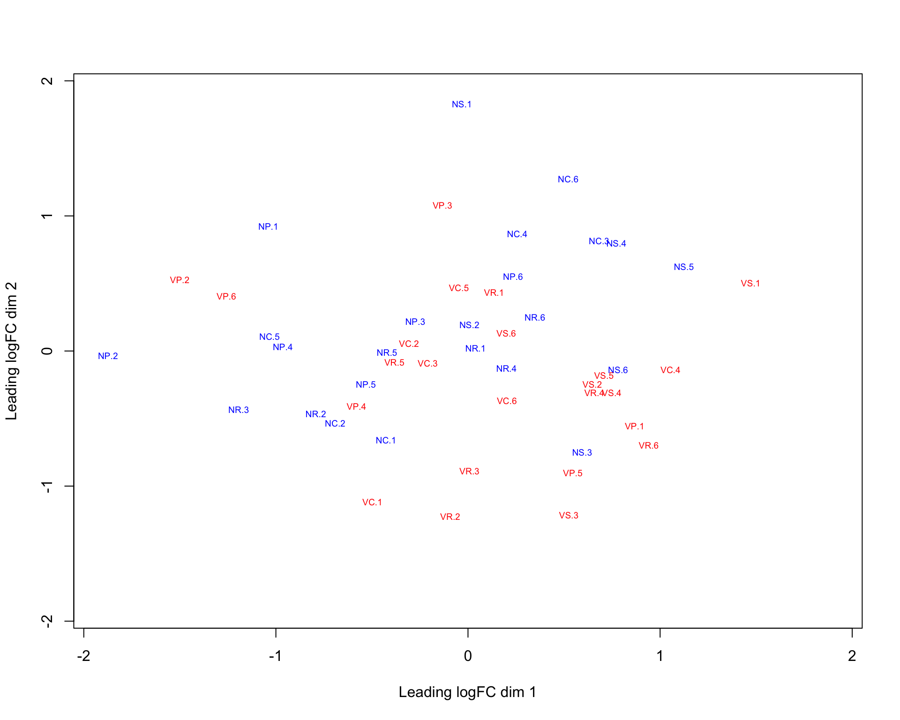
plotMDS(y, col = c("white","red","blue","white","white","white","white","white")[factor(allGroups)], cex=0.6, xlim=c(-1.9, 1.9), ylim=c(-1.9, 1.9))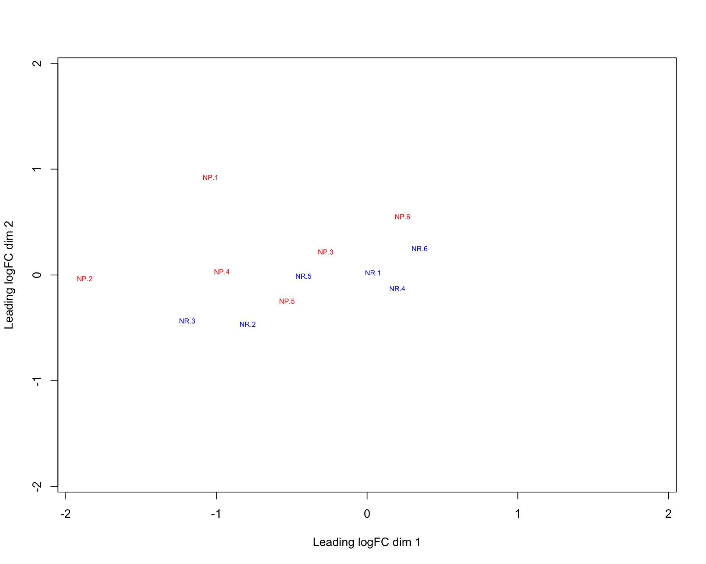
plotMDS(y, col = c("white","white","white","white","white","red","blue","white")[factor(allGroups)], cex=0.6, xlim=c(-1.9, 1.9), ylim=c(-1.9, 1.9))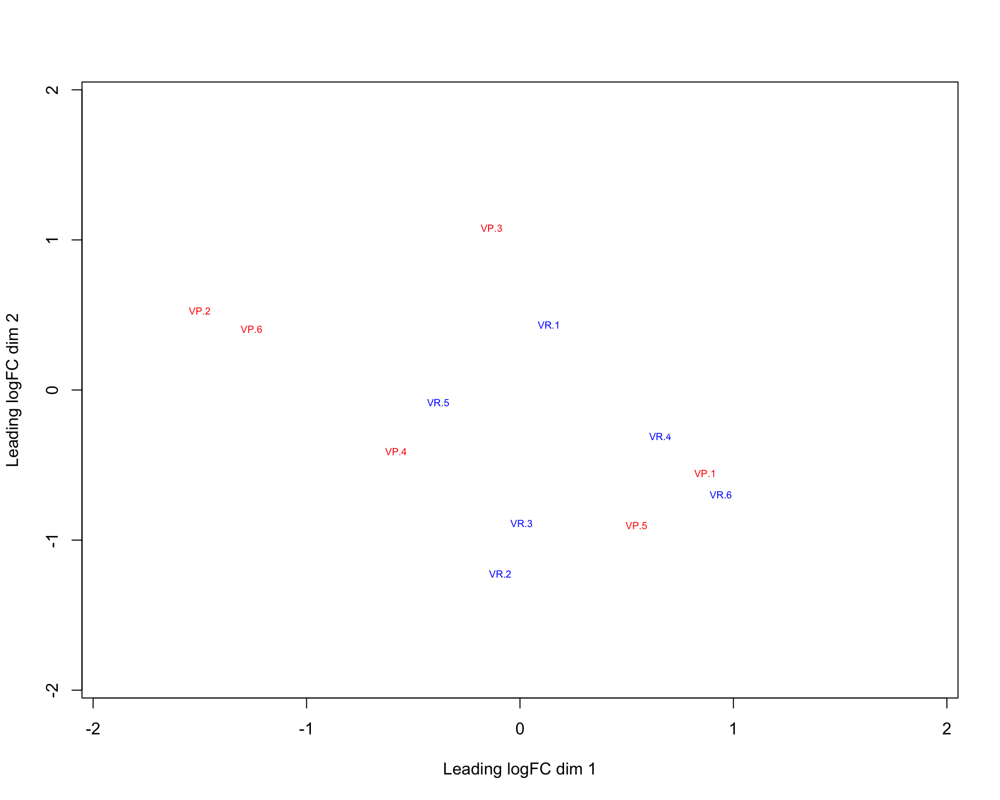
plotMDS(y, col = c("white","white","blue","white","white","red","white","white")[factor(allGroups)], cex=0.6, xlim=c(-1.9, 1.9), ylim=c(-1.9, 1.9))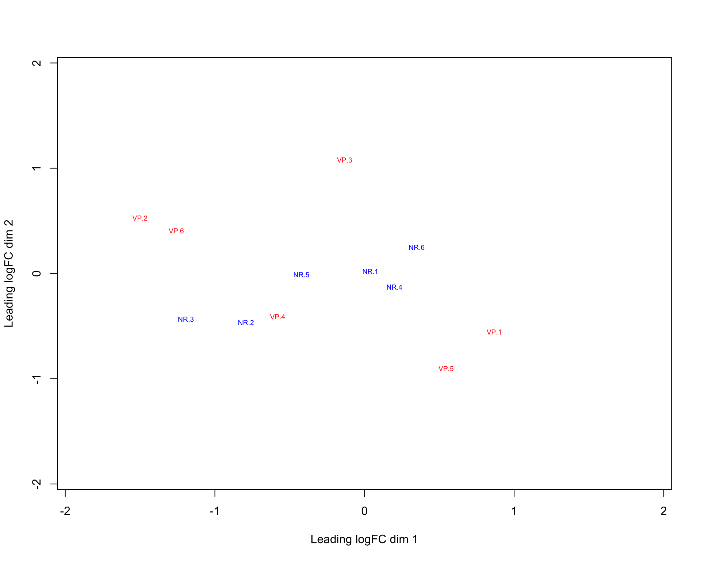
######################## CPM as applied to L120 #####################
#####################################################################
# Counts per million (y has only been edgeR filtered here)
yCPM <- y
yCPM[[1]] <- cpm(y, TRUE, TRUE)
yCPM$samples$group <- allGroups
plotMDS(yCPM, col = c("red","deeppink","darkorange","gold","green2", "green4","blue", "purple")[factor(allGroups)], cex=0.6, xlim=c(-1.9, 1.9), ylim=c(-1.9, 1.9))Warning in cpm.default(x$counts, lib.size = lib.size, log = log,
prior.count = prior.count): NaNs produced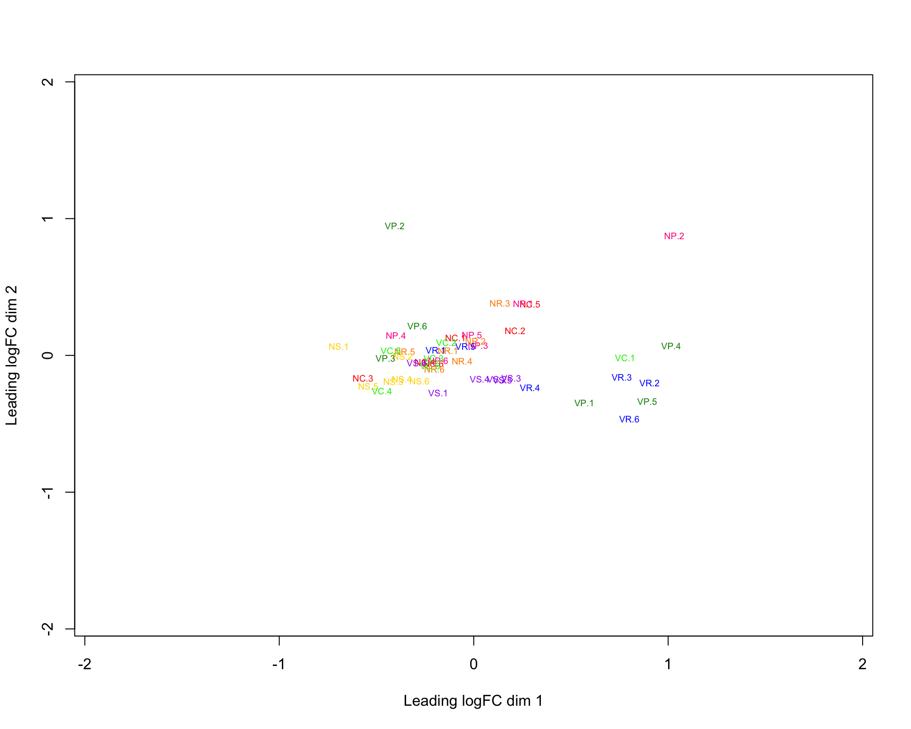
plotMDS(yCPM, col = c("blue","blue","blue","blue","red","red","red","red")[factor(allGroups)], cex=0.6, xlim=c(-1.9, 1.9), ylim=c(-1.9, 1.9))Warning in cpm.default(x$counts, lib.size = lib.size, log = log,
prior.count = prior.count): NaNs produced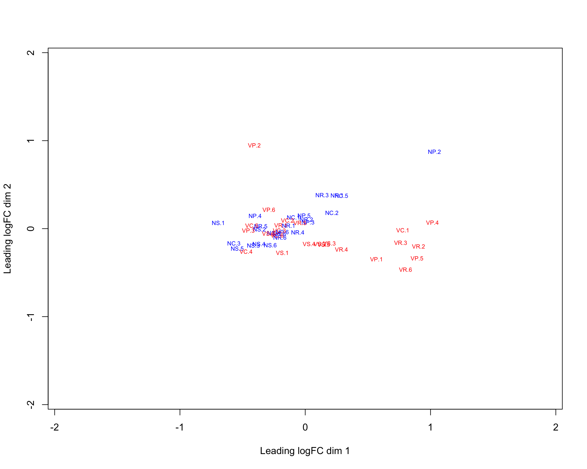
plotMDS(yCPM, col = c("white","red","blue","white","white","white","white","white")[factor(allGroups)], cex=0.6, xlim=c(-1.9, 1.9), ylim=c(-1.9, 1.9))Warning in cpm.default(x$counts, lib.size = lib.size, log = log,
prior.count = prior.count): NaNs produced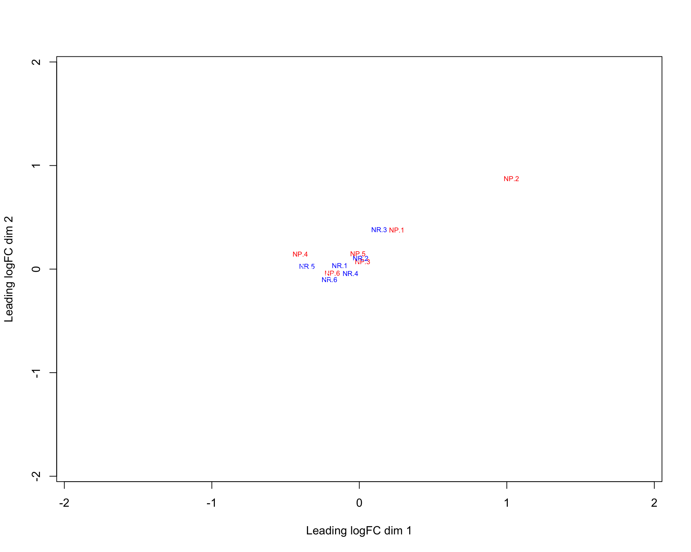
plotMDS(yCPM, col = c("white","white","white","white","white","red","blue","white")[factor(allGroups)], cex=0.6, xlim=c(-1.9, 1.9), ylim=c(-1.9, 1.9))Warning in cpm.default(x$counts, lib.size = lib.size, log = log,
prior.count = prior.count): NaNs produced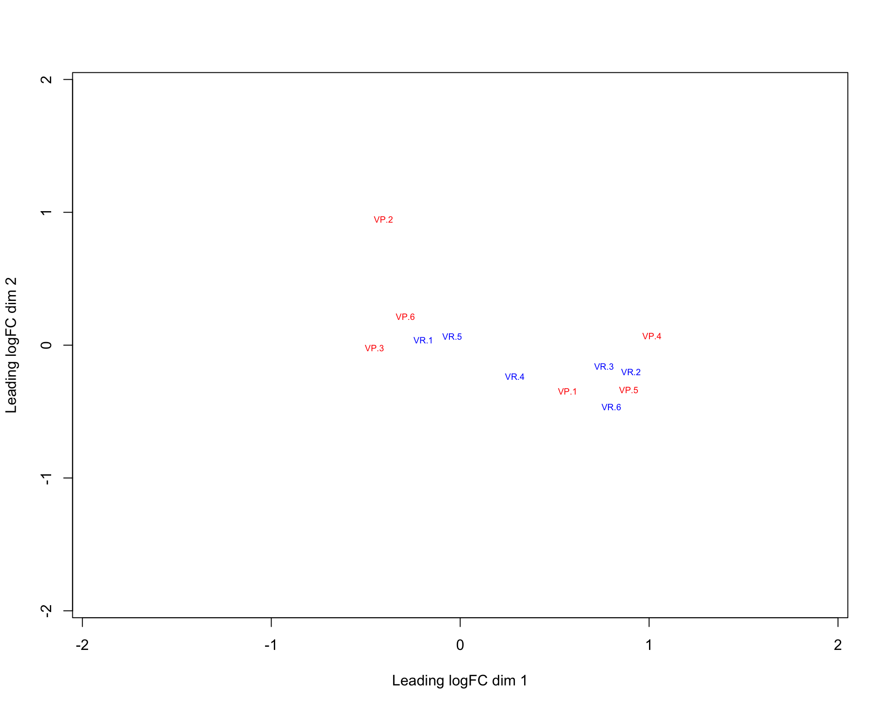
plotMDS(yCPM, col = c("white","white","blue","white","white","red","white","white")[factor(allGroups)], cex=0.6, xlim=c(-1.9, 1.9), ylim=c(-1.9, 1.9))Warning in cpm.default(x$counts, lib.size = lib.size, log = log,
prior.count = prior.count): NaNs produced# BetweenLaneNormalization (on the cpm)
yCPMN <- yCPM
yCPMN[[1]] <- betweenLaneNormalization(yCPM[[1]], which="full", round=FALSE) #from EDASeq
ggparcoord(data.frame(yCPMN[[1]]), columns=1:48, alphaLines=0, boxplot=TRUE, scale="globalminmax") + coord_flip()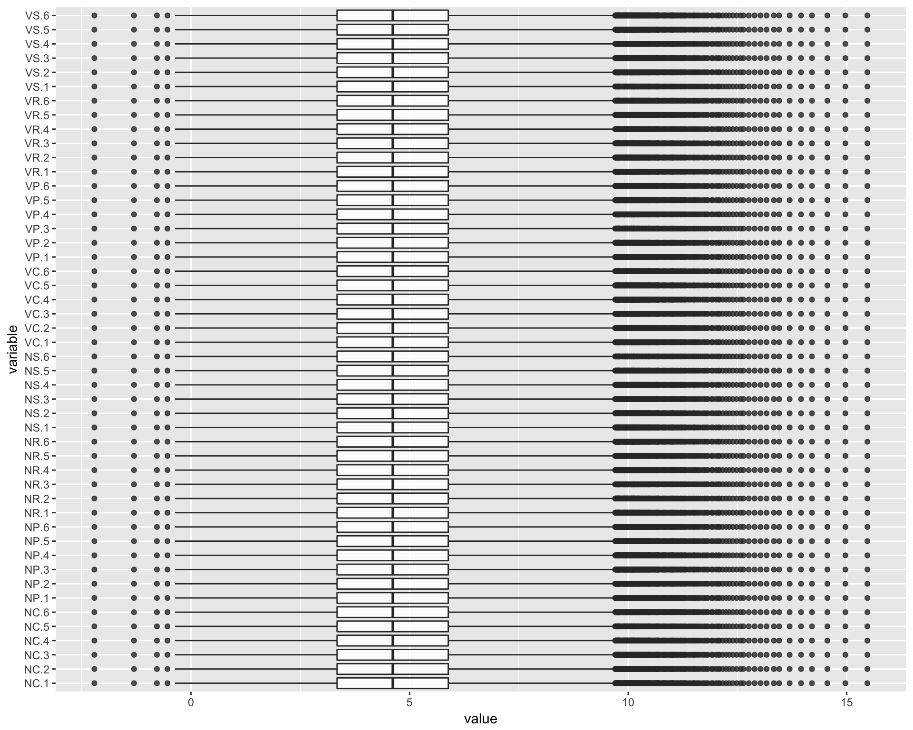
yCPMN$samples$group <- allGroups
plotMDS(yCPMN, col = c("red","deeppink","darkorange","gold","green2", "green4","blue", "purple")[factor(allGroups)], cex=0.6, xlim=c(-1.9, 1.9), ylim=c(-1.9, 1.9))Warning in cpm.default(x$counts, lib.size = lib.size, log = log,
prior.count = prior.count): NaNs produced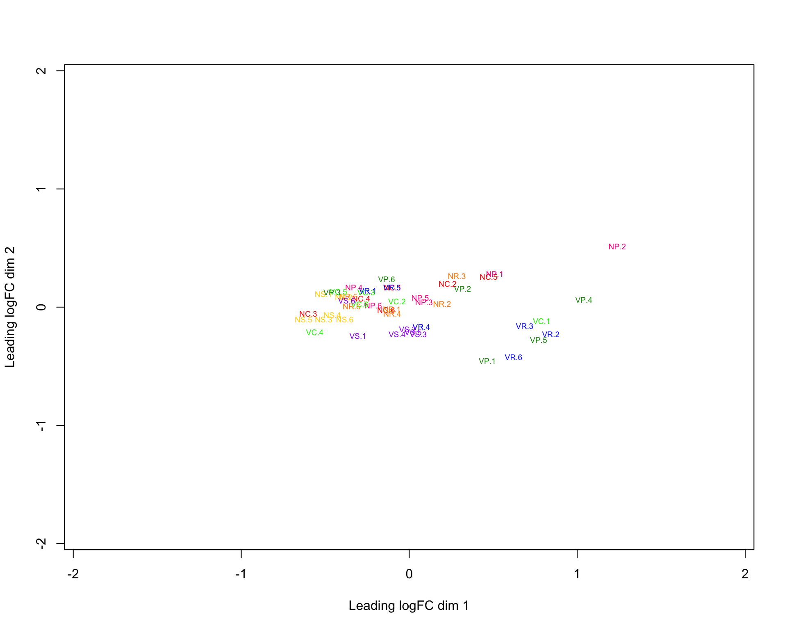
plotMDS(yCPMN, col = c("blue","blue","blue","blue","red","red","red","red")[factor(allGroups)], cex=0.6, xlim=c(-1.9, 1.9), ylim=c(-1.9, 1.9))Warning in cpm.default(x$counts, lib.size = lib.size, log = log,
prior.count = prior.count): NaNs produced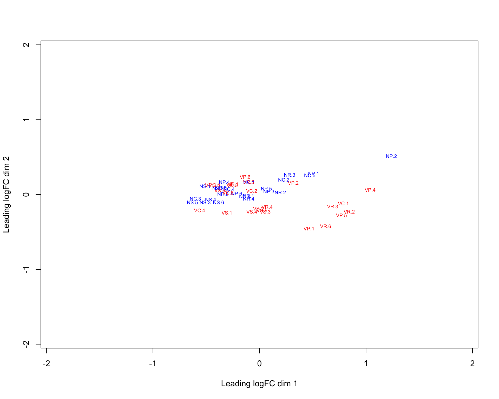
plotMDS(yCPMN, col = c("white","red","blue","white","white","white","white","white")[factor(allGroups)], cex=0.6, xlim=c(-1.9, 1.9), ylim=c(-1.9, 1.9))Warning in cpm.default(x$counts, lib.size = lib.size, log = log,
prior.count = prior.count): NaNs produced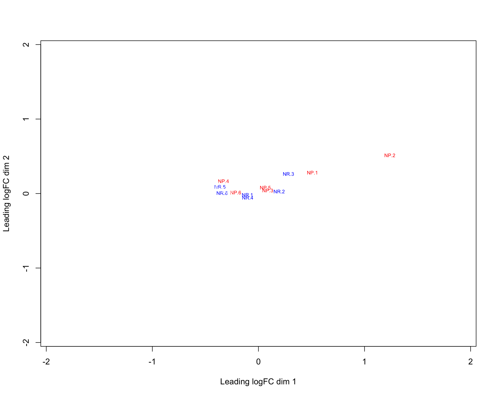
plotMDS(yCPMN, col = c("white","white","white","white","white","red","blue","white")[factor(allGroups)], cex=0.6, xlim=c(-1.9, 1.9), ylim=c(-1.9, 1.9))Warning in cpm.default(x$counts, lib.size = lib.size, log = log,
prior.count = prior.count): NaNs produced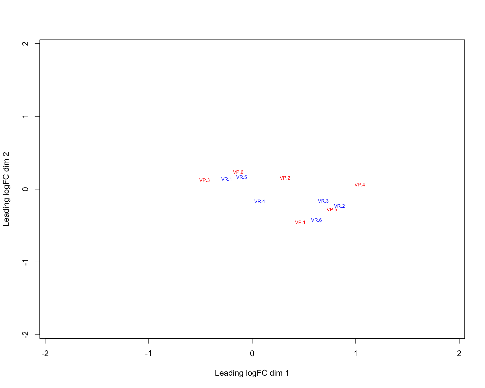
plotMDS(yCPMN, col = c("white","white","blue","white","white","red","white","white")[factor(allGroups)], cex=0.6, xlim=c(-1.9, 1.9), ylim=c(-1.9, 1.9))Warning in cpm.default(x$counts, lib.size = lib.size, log = log,
prior.count = prior.count): NaNs produced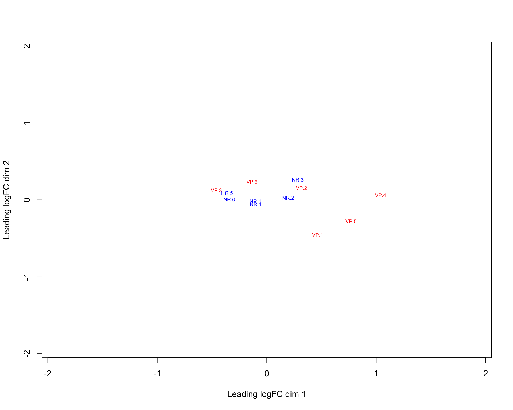
######### Quantile filtering as on L120 ##########
################################################
RowSD = function(x) {
sqrt(rowSums((x - rowMeans(x))^2)/(dim(x)[2] - 1))
}
yMutate <- as.data.frame(yCPMN[[1]])
yMutate = mutate(yMutate, mean = rowMeans(yCPMN[[1]]), stdev = RowSD(yCPMN[[1]]))
rownames(yMutate)=rownames(yCPMN[[1]])
# The first quartile threshold of mean counts across the 5 samples
q1Tm = as.numeric(summary(yMutate$mean)["1st Qu."])
# The first quartile threshold of standard deviation across the 5 samples
q1Ts = as.numeric(summary(yMutate$stdev)["1st Qu."])
# Out of 8185 genes, keep 4377 and discard 4204
keepIndex = which(yMutate$mean > q1Tm & yMutate$stdev > q1Ts)
discardIndex = which(!(yMutate$mean > q1Tm & yMutate$stdev > q1Ts))
yMutateQ1 = yMutate[keepIndex,]
filt = yMutate[discardIndex,]
yMutateQ1 = yMutateQ1[ , !(names(yMutateQ1) %in% c("mean","stdev"))]
filt = filt[ , !(names(filt) %in% c("mean","stdev"))]
ggparcoord(data.frame(yMutateQ1), columns=1:48, alphaLines=0, boxplot=TRUE, scale="globalminmax") + coord_flip()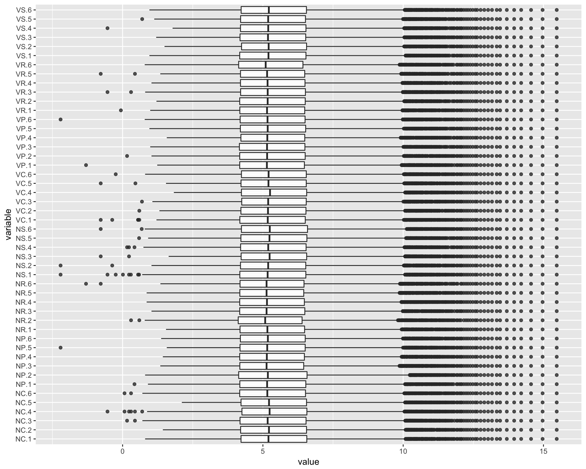
yMutateQ1 = DGEList(counts=yMutateQ1)
yMutateQ1 <- calcNormFactors(yMutateQ1)Warning in .calcFactorWeighted(obs = x[, i], ref = x[, refColumn],
libsize.obs = lib.size[i], : NaNs produced
Warning in .calcFactorWeighted(obs = x[, i], ref = x[, refColumn],
libsize.obs = lib.size[i], : NaNs produced
Warning in .calcFactorWeighted(obs = x[, i], ref = x[, refColumn],
libsize.obs = lib.size[i], : NaNs produced
Warning in .calcFactorWeighted(obs = x[, i], ref = x[, refColumn],
libsize.obs = lib.size[i], : NaNs produced
Warning in .calcFactorWeighted(obs = x[, i], ref = x[, refColumn],
libsize.obs = lib.size[i], : NaNs produced
Warning in .calcFactorWeighted(obs = x[, i], ref = x[, refColumn],
libsize.obs = lib.size[i], : NaNs produced
Warning in .calcFactorWeighted(obs = x[, i], ref = x[, refColumn],
libsize.obs = lib.size[i], : NaNs produced
Warning in .calcFactorWeighted(obs = x[, i], ref = x[, refColumn],
libsize.obs = lib.size[i], : NaNs produced
Warning in .calcFactorWeighted(obs = x[, i], ref = x[, refColumn],
libsize.obs = lib.size[i], : NaNs produced
Warning in .calcFactorWeighted(obs = x[, i], ref = x[, refColumn],
libsize.obs = lib.size[i], : NaNs produced
Warning in .calcFactorWeighted(obs = x[, i], ref = x[, refColumn],
libsize.obs = lib.size[i], : NaNs produced
Warning in .calcFactorWeighted(obs = x[, i], ref = x[, refColumn],
libsize.obs = lib.size[i], : NaNs produced
Warning in .calcFactorWeighted(obs = x[, i], ref = x[, refColumn],
libsize.obs = lib.size[i], : NaNs produced
Warning in .calcFactorWeighted(obs = x[, i], ref = x[, refColumn],
libsize.obs = lib.size[i], : NaNs produced
Warning in .calcFactorWeighted(obs = x[, i], ref = x[, refColumn],
libsize.obs = lib.size[i], : NaNs produced
Warning in .calcFactorWeighted(obs = x[, i], ref = x[, refColumn],
libsize.obs = lib.size[i], : NaNs produced
Warning in .calcFactorWeighted(obs = x[, i], ref = x[, refColumn],
libsize.obs = lib.size[i], : NaNs produced
Warning in .calcFactorWeighted(obs = x[, i], ref = x[, refColumn],
libsize.obs = lib.size[i], : NaNs produced
Warning in .calcFactorWeighted(obs = x[, i], ref = x[, refColumn],
libsize.obs = lib.size[i], : NaNs produced
Warning in .calcFactorWeighted(obs = x[, i], ref = x[, refColumn],
libsize.obs = lib.size[i], : NaNs produced
Warning in .calcFactorWeighted(obs = x[, i], ref = x[, refColumn],
libsize.obs = lib.size[i], : NaNs produced
Warning in .calcFactorWeighted(obs = x[, i], ref = x[, refColumn],
libsize.obs = lib.size[i], : NaNs produced
Warning in .calcFactorWeighted(obs = x[, i], ref = x[, refColumn],
libsize.obs = lib.size[i], : NaNs produced
Warning in .calcFactorWeighted(obs = x[, i], ref = x[, refColumn],
libsize.obs = lib.size[i], : NaNs produced
Warning in .calcFactorWeighted(obs = x[, i], ref = x[, refColumn],
libsize.obs = lib.size[i], : NaNs produced
Warning in .calcFactorWeighted(obs = x[, i], ref = x[, refColumn],
libsize.obs = lib.size[i], : NaNs produced
Warning in .calcFactorWeighted(obs = x[, i], ref = x[, refColumn],
libsize.obs = lib.size[i], : NaNs produced
Warning in .calcFactorWeighted(obs = x[, i], ref = x[, refColumn],
libsize.obs = lib.size[i], : NaNs produced
Warning in .calcFactorWeighted(obs = x[, i], ref = x[, refColumn],
libsize.obs = lib.size[i], : NaNs produced
Warning in .calcFactorWeighted(obs = x[, i], ref = x[, refColumn],
libsize.obs = lib.size[i], : NaNs produced
Warning in .calcFactorWeighted(obs = x[, i], ref = x[, refColumn],
libsize.obs = lib.size[i], : NaNs produced
Warning in .calcFactorWeighted(obs = x[, i], ref = x[, refColumn],
libsize.obs = lib.size[i], : NaNs producedyMutateQ1$samples$group <- allGroups
plotMDS(yMutateQ1, col = c("red","deeppink","darkorange","gold","green2", "green4","blue", "purple")[factor(allGroups)], cex=0.6, xlim=c(-1.9, 1.9), ylim=c(-1.9, 1.9))Warning in cpm.default(x$counts, lib.size = lib.size, log = log,
prior.count = prior.count): NaNs produced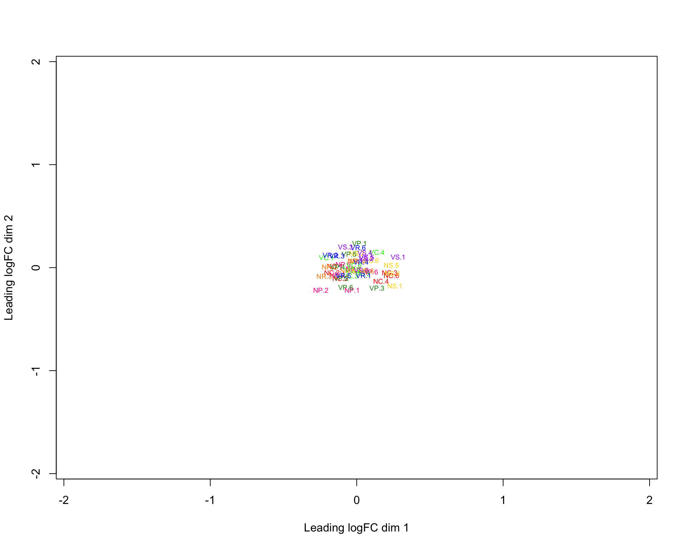
plotMDS(yMutateQ1, col = c("blue","blue","blue","blue","red","red","red","red")[factor(allGroups)], cex=0.6, xlim=c(-1.9, 1.9), ylim=c(-1.9, 1.9))Warning in cpm.default(x$counts, lib.size = lib.size, log = log,
prior.count = prior.count): NaNs produced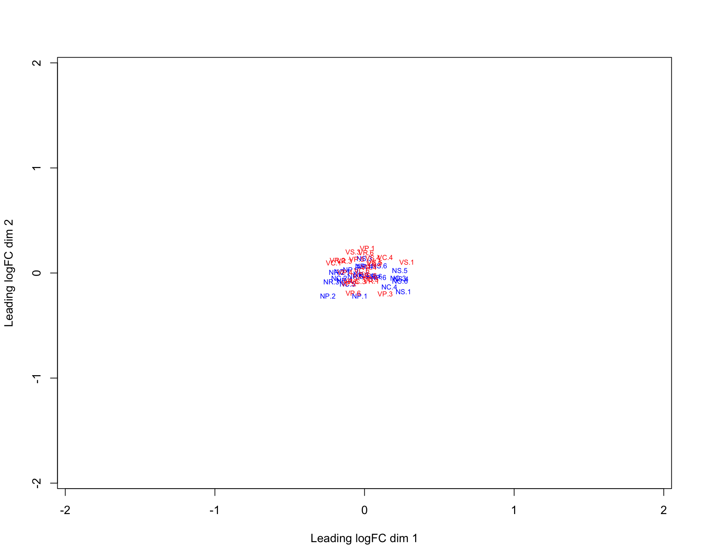
plotMDS(yMutateQ1, col = c("white","red","blue","white","white","white","white","white")[factor(allGroups)], cex=0.6, xlim=c(-1.9, 1.9), ylim=c(-1.9, 1.9))Warning in cpm.default(x$counts, lib.size = lib.size, log = log,
prior.count = prior.count): NaNs produced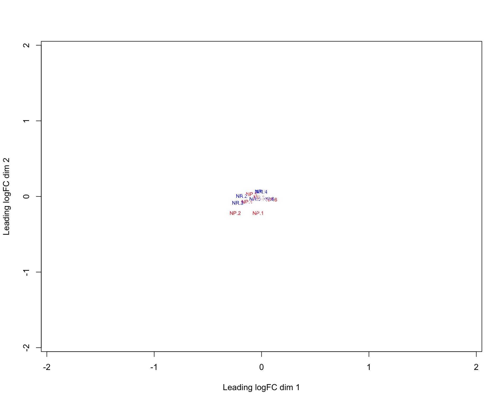
plotMDS(yMutateQ1, col = c("white","white","white","white","white","red","blue","white")[factor(allGroups)], cex=0.6, xlim=c(-1.9, 1.9), ylim=c(-1.9, 1.9))Warning in cpm.default(x$counts, lib.size = lib.size, log = log,
prior.count = prior.count): NaNs produced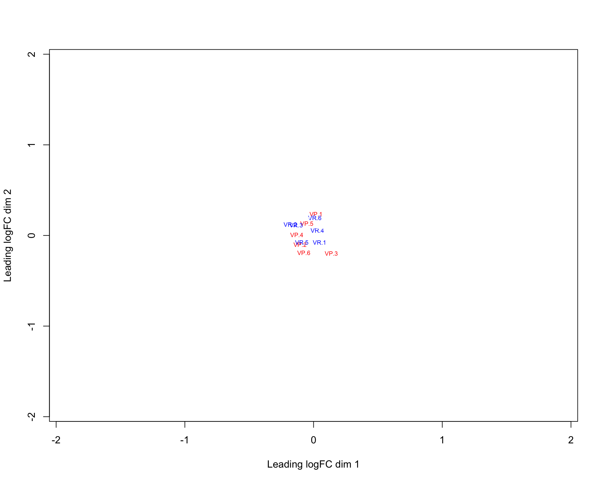
plotMDS(yMutateQ1, col = c("white","white","blue","white","white","red","white","white")[factor(allGroups)], cex=0.6, xlim=c(-1.9, 1.9), ylim=c(-1.9, 1.9))Warning in cpm.default(x$counts, lib.size = lib.size, log = log,
prior.count = prior.count): NaNs produced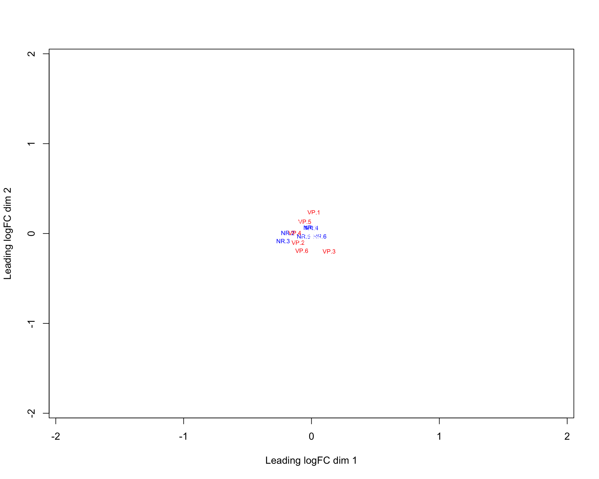